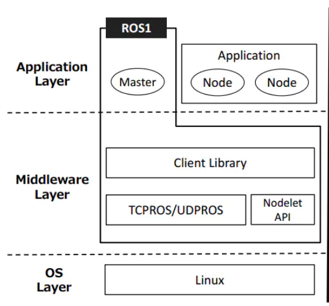

1 ROS Project Structure
1.1 Catkin Workspace
Catkin workspace is the directory where catkin software packages are created, modified, and compiled. Catkin's workspace can be intuitively described as a warehouse, which contains various ROS project projects to facilitate system organization, management and calling.
- Create workspace:
mkdir -p ~/catkin_ws/src # Create a folder
cd ~/catkin_ws/src # Enter the folder
catkin_init_workspace # Initialize the current directory into a ROS workspace
cd .. # Return to the parent directory
catkin_make # Build the code in the workspace
The structure of catkin is very clear. It includes three paths: src, build, and devel. It may also include others under some compilation options. But these three folders are the default for the catkin compilation system. Their specific functions are as follows:
src/: ROS catkin software package (source code package)
build/: cache information and intermediate files of catkin (CMake)
devel/: Generated target files (including header files, dynamic link libraries, static link libraries, executable files, etc.), environment variables
A simple workspace looks like this:
workspace_folder/ -- WORKSPACE
src/ -- SOURCE SPACE
CMakeLists.txt -- 'Toplevel' CMake file, provided by catkin
package_1/
CMakeLists.txt -- CMakeLists.txt file for package_1
package.xml -- Package manifest for package_1
...
package_n/
CMakeLists.txt -- CMakeLists.txt file for package_n
package.xml -- Package manifest for package_n
1.2 ROS Software Package
Package is not only a software package on Linux, but also the basic unit of catkin compilation. The object we use catkin_make to compile is each ROS package.
+--PACKAGE
+-- CMakeLists.txt
+-- package.xml
+-- src/
+-- include/
+-- scripts/
+-- msg/
+-- srv/
+-- urdf/
+-- launch/
CMakeLists.txt: Defines the package name, dependencies, source files, target files and other compilation rules of the package. It is an essential component of the package.
package.xml: Describes the package name, version number, author, dependencies and other information of the package, which is an indispensable component of the package.
src/: stores ROS source code, including C++ source code (.cpp) and Python module (.py)
include/: stores the header files corresponding to the C++ source code
scripts/: stores executable scripts, such as shell scripts (.sh), Python scripts (.py)
msg/: stores messages in custom format (.msg)
srv/: stores services in custom formats (.srv)
urdf/: stores the robot’s model description (.urdf or .xacro) and 3D model files (.sda, .stl, .dae, etc.)
launch/: stores launch files (.launch or .xml)
Create your own package:
- Command format:
The catkin_create_pkg command will ask you to enter package_name. If necessary, you can also add some other dependent software packages later:
catkin_create_pkg <package_name> [depend1] [depend2] [depend3]
- For example:
catkin_create_pkg beginner_tutorials std_msgs rospy roscpp
2 ROS Communication Architecture

2.1 Master And Node
1 Master
Node manager. Each node must register with the master before starting and manage the communication between nodes.
2 Roscore
Starting the master will also start rosout (log management) and parameter server (parameter manager)
3 Nodes
ROS processes and instances of running executable files in pkg.
$rosrun [pkg_name] [node_name] #Start
$rosnode list #List currently running node information
$rosnode info [node_name] #Display detailed information of a node
$rosnode kill [node_name] #End a node
4 Launch
Start the master and multiple nodes.
$roslaunch [pkg_name] [file_name.launch]
2.2 Service And Topic
We provide some services and topics for interacting with mycobot.
1 Service
Enter in the command line:
source ~/catkin_ws/devel/setup.bash # Add environment variables
roslaunch mycobot_pro450_communication communication_service.launch
Support parameters:
- port：concatenate serial string
- baud：baud rate
Open a new command line:
# Display active service information
rosservice list
#/get_joint_angles
#/get_joint_coords
#/set_joint_angles
#/set_joint_coords
#/switch_gripper_status
#/switch_pump_status
Related commands and instructions:
| command | Detailed description |
|---|---|
| rosservice list | Display active service information |
| rosservice info [service name] | Display information about the specified service |
| rosservice type [service name] | Show service type |
| rosservice find [service name] | Find a service for a specified service type |
| rosservice uri [service name] | show ROSRPC URI service |
| rosservice args [service name] | show service parameters |
| rosservice call [service name] [parameters] | Request service with input parameters |
2 Topic
Enter in the command line:
source ~/catkin_ws/devel/setup.bash
roslaunch mycobot_pro450_communication communication_topic.launch
Support parameters:
- port：concatenate serial string
- baud：baud rate
Open a new command line:
# Display active service information
rostopic list
#/mycobot/angles_goal
#/mycobot/coords_goal
#/mycobot/angles_real
#/mycobot/coords_real
#/mycobot/pump_status
#/mycobot/gripper_status
Related commands and instructions:
| Command | Detailed description |
|---|---|
| rostopic list | Display active topic list |
| rostopic echo [topic name] | Display the message content of the specified topic in real time |
| rostopic find [type name] | Display threads with messages of the specified type |
| rostopic type [topic name] | Displays the message type of the specified topic |
| rostopic bw [topic name] | Display the message bandwidth of the specified topic（bandwidth） |
| rostopic hz [topic name] | Display the message data publishing cycle of the specified topic |
| rostopic info [topic name | Display information about the specified topic |
| rostopic pub [topic name] [message type] [parameters] | Post a message with the specified topic name |
The difference between service and topic:
| service | topic | |
|---|---|---|
| Synchronization | Asynchronous | Synchronous |
| communication model | pub/sub | server/client |
| underlying protocol | ROSTCP/ROSUDP | ROSTCP/ROSUDP |
| Feedback Mechanism | No | Yes |
| buffer | Yes | No |
| Real-time | Weak | Strong |
| Node Relationship | Many-to-Many | One-to-Many |
| Applicable Scenarios | Data Transmission | Logical Processing |
you can go to service and topic learn more about the use of these two features
2.3 Introduction To Msg And Srv
- msg：The msg file is a simple text file describing the fields of a ROS message. They are used to generate source code for messages in different languages (c++ or python, etc.).
- srv：srv files are used to describe services. It consists of two parts: the request (request) and the response (response). msg files are stored in the msg directory of the package, and srv files are stored in the srv directory.
1 Rosmsg
rosmsg is a command line tool for displaying information about ROS message types.
rosmsg demo:
rosmsg show # Show message description
rosmsg info # Display message information
rosmsg list # list all messages
rosmsg md5 # Display md5 encrypted message
rosmsg package # Display all messages under a feature pack
rosmsg packages # List feature packs that contain messages
rosmsg list will list all msgs in the current ROS
rosmsg packages List all packages containing messages
rosmsg package List all msgs under a package
//rosmsg package # Package names
rosmsg package turtlesim
- rosmsg show Show message description
//rosmsg show # message name
rosmsg show turtlesim/Pose
# result:
float32 x
float32 y
float32 theta
float32 linear_velocity
float32 angular_velocity
rosmsg info Works the same as rosmsg show
rosmsg md5 A check algorithm to ensure the consistency of data transmission
2 rossrv
rossrv is a command-line tool for displaying information about ROS service types, and uses a syntax that is highly similar to rosmsg.
rossrv show # Display service message details
rossrv info # Display information about service messages
rossrv list # List all service information
rossrv md5 # Display md5 encrypted service messages
rossrv package # Display all service messages under a package
rossrv packages # Show all packages that contain service messages
rossrv list Will list all srv messages in the current ROS
rossrv packages List all packages that contain service messages
rossrv package List all msgs under a package
//rossrv package # Package names
rossrv package turtlesim
- rossrv show Show message description
//rossrv show # message name
rossrv show turtlesim/Spawn
# result:
float32 x
float32 y
float32 theta
string name
---
string name
rossrv info The effect is the same as rossrv show
rossrv md5 Use md5 checksum (encryption) for service data
3 Introduction To URDF
- Unified Robot Description Format，Unified Robot Description Format, abbreviated as URDF. The urdf package in ROS contains a C++ parser for URDF, and URDF files describe robot models in XML format. *URDF cannot be used alone, it needs to be combined with Rviz or Gazebo. URDF is just a file that needs to be rendered into a graphical robot model in Rviz or Gazebo.
3.1 Urdf File Description
Code example:
Only part of the code is intercepted here for display:
<?xml version="1.0"?>
<robot xmlns:xacro="http://www.ros.org/wiki/xacro" name="firefighter" >
<xacro:property name="width" value=".2" />
<link name="base">
<visual>
<geometry>
<mesh filename="package://mycobot_description/urdf/mycobot_pro_450/PRO450_J1.dae"/>
</geometry>
<origin xyz = "0.0 -0.11 0 " rpy = " 0 0 0"/>
</visual>
<collision>
<geometry>
<mesh filename="package://mycobot_description/urdf/mycobot_pro_450/PRO450_J1.dae"/>
</geometry>
<origin xyz = "0.0 -0.11 0 " rpy = " 0 0 0"/>
</collision>
</link>
<link name="link1">
<visual>
<geometry>
<mesh filename="package://mycobot_description/urdf/mycobot_pro_450/PRO450_J2.dae"/>
</geometry>
<origin xyz = "0.0405 0 0.0475 " rpy = " -1.5708 0 -1.5708 "/>
</visual>
<collision>
<geometry>
<mesh filename="package://mycobot_description/urdf/mycobot_pro_450/PRO450_J2.dae"/>
</geometry>
<origin xyz = "0.0405 0 0.0475 " rpy = " -1.5708 0 -1.5708 "/>
</collision>
</link>
<link name="link2">
<visual>
<geometry>
<mesh filename="package://mycobot_description/urdf/mycobot_pro_450/PRO450_J3.dae"/>
</geometry>
<origin xyz = "0.0598 0.005 -0.203 " rpy = " 0 0 1.5708 "/>
</visual>
<collision>
<geometry>
<mesh filename="package://mycobot_description/urdf/mycobot_pro_450/PRO450_J3.dae"/>
</geometry>
<origin xyz = "0.0598 0.005 -0.203 " rpy = " 0 0 1.5708"/>
</collision>
</link>
<joint name="joint1" type="revolute">
<axis xyz="0 0 1"/>
<limit effort = "1000.0" lower = "-2.8797" upper = "2.8797" velocity = "0"/>
<parent link="base"/>
<child link="link1"/>
<origin xyz= "-0.0045 0 0.155" rpy = "0 0 0"/>
</joint>
<joint name="joint2" type="revolute">
<axis xyz="1 0 0"/>
<limit effort = "1000.0" lower = "-2.0943" upper = "2.0943" velocity = "0"/>
<parent link="link1"/>
<child link="link2"/>
<origin xyz= "0.05 0 0.048" rpy = "0 0 0"/>
</joint>
</robot>
It can be seen that the urdf file is not complicated, it is mainly composed of two parts, link and joint, which are repeated continuously.
3.2 Link Section
The link element describes a rigid body with inertial, visual features, and collision properties
3.2.1 Attributes
name： The name used to describe the link itself
3.2.2 Element
<inertial>(optional)- Inertia properties of connecting rods
<origin>(optional，defaults to identity if not specified)- Defines the reference coordinate of the inertial reference system relative to the connecting rod coordinate system. The coordinate must be defined at the center of gravity of the connecting rod, and its coordinate axis may not be parallel to the main axis of inertia.
- xyz (optional, defaults to zero vector) Represents the offset in the x , y , z x,y,zx,y,z directions, in meters.
- rpy(optional: defaults to identity if not specified) Indicates the rotation of the coordinate axis in the RPY direction, in radians.
<mass>Mass properties of connecting rods<inertia>3×3 rotational inertia matrix, consisting of six independent quantities: ixx, ixy, ixz, iyy, iyz, izz。
<visual>(optional)- Visual properties of the connecting rod. It is used to specify the shape of the link display (rectangle, cylinder, etc.). There can be multiple visual elements in the same link, and the shape of the link is formed by two elements. In general, the model is more complex and can be drawn through soildwork to generate stl calls, and simple shapes such as adding end effectors can be directly written. At the same time, the position of the geometry can be adjusted according to the gap between the theoretical model and the actual model.
<namel>(optional) The name of the connecting rod geometry.<origin>(optional，defaults to identity if not specified)- The geometry coordinate system relative to the coordinate system of the connecting rod.
- xyz (optional: defaults to zero vector) Represents the offset in the x , y , z x,y,zx,y,z directions, in meters.
- rpy (optional: defaults to identity if not specified) Indicates the rotation of the coordinate axis in the RPY direction, in radians.
<geometry>（required）- The shape of the visualization, which can be one of the following:
<box>A rectangle with elements including length, width, and height. The origin is in the center.<cylinder>Cylinder, elements include radius and length. center of origin.<sphere>Sphere, element containing the radius. The origin is in the center.<mesh>The grid, as determined by the file, also provides a scale to define its boundaries. Collada .dae files are recommended, .stl files are also supported, but must be a local file.
<material>(optional)- Visualize the component's material. It can be defined outside the link tag, but it must be inside the robot tag. When defining outside the link tag, the name of the link must be quoted.
<color>(optional) Color, consisting of red/green/blue/alpha, in the range [0,1].<texture>(optional) Material properties, defined by the file.
<collision>(optional)- Collision properties of the link. Collision properties differ from visual properties of connecting rods, and simple collision models are often used to simplify calculations. The same link can have multiple collision attribute labels, and the collision attribute representation of the link is composed of the set of geometric shapes defined by it.
<name>(optional) Specifies the name of the connecting rod geometry<origin>(optional，defaults to identity if not specified)- The reference coordinate system of the collision component is relative to the reference coordinate system of the link coordinate system.
- xyz (optional, default zero vector) Represents the offset in the x , y , z x,y,zx,y,z directions, in meters.
- rpy (optional, defaults to identity if not specified) Indicates the rotation of the coordinate axis in the RPY direction, in radians.
<geometry>Same as the geometry element description above
Detailed elements and the role of each element can go to official documentation to view
3.3 Joint Part
The joint section describes the kinematics and dynamics of the joint and specifies safety limits for the joint.
3.3.1 Properties Of Joint:
name：
Specifies a unique name for the joint
type：
Specifies the type of joint, where type can be one of the following:
- revolute - A hinged joint that rotates along an axis, the range of which is specified by the upper and lower bounds.
- Continuous - A continuous hinged joint that rotates around an axis with no upper and lower bounds.
- Prismatic - A sliding joint that slides along an axis, the range of which is specified by upper and lower limits. +Fixed - this is not really a joint because it cannot move. All degrees of freedom are locked. This type of joint does not require axes, calibration, dynamics, limits or safety_controller。
- Floating - This joint allows motion in all 6 degrees of freedom.
- Plane - This joint allows movement in a plane perpendicular to the axis.
3.3.2 Elements Of Joint
<origin>(optional，defaults to identity if not specified) In the transformation from parent link to child link, the joint is located at the origin of the child link. Modifying this parameter can adjust the position of the connecting rod. It can be used to adjust the error between the actual model and the theoretical model, but it is not recommended to modify it greatly, because this parameter affects the connecting rod stl The position of , easily affects the collision detection effect.- xyz (optional: default to zero vector) Represents the offset in the x , y , z x,y,zx,y,z axis directions, in meters.
- rpy (optional: default to zero vector) Represents the angle of rotation around a fixed axis: roll is around the x-axis, pitch is around the y-axis, and yaw is around the z-axis, expressed in radians.
<parent>(required)- The name of the parent link is a mandatory attribute.
- link The name of the parent link is the name of the link in the robot structure tree.
<child>(required)- The name of the child link is a mandatory attribute.
- link The name of the child link is the name of the link in the robot structure tree.
<axis>(optional: defaults to (1,0,0))- The joint's axis is in the joint's coordinate system. This is the axis of rotation (revolute joint), the axis of movement of the prismatic joint, and the standard plane of the planar joint. This axis is specified in the joint coordinate system. Modifying this parameter can adjust the axis around which the joint rotates. It is often used to adjust the rotation direction. If the model rotation is opposite to the actual one, just multiply by -1. Fixed and floating joints do not need this element.
- xyz(required) x , y , z x, y, zx, y, z components representing axis vectors, as normalized vectors.
<calibration>(optional)- The reference point of the joint, used to correct the absolute position of the joint.
- rising (optional) When the joint is moving forward, the reference point triggers a rising edge.
- falling (optional) When the joint is moving forward, the reference point triggers a falling edge.
<dynamics>(optional)- This element is used to specify the physical properties of the joint. Its value is used to describe the modeling performance of the joint, especially during simulation.
<limit> (Required when the joint is a rotation or translation joint)
- This element is a joint kinematics constraint.
- lower (optional, default to 0) Specify the attribute of the lower bound of the joint's motion range (the unit of the revolute joint is radians, and the unit of the prismatic joint is meters). This attribute is ignored for continuous joints.
- upper (optional, defaults to 0) Specify the attribute of the upper bound of the joint's motion range (the unit of the revolute joint is radians, and the unit of the prismatic joint is the meter). This attribute is ignored for continuous joints.
- effort (required) This property specifies the maximum force at which the joint will run.
- velocity (required) This property specifies the maximum speed of the joint runtime.
<mimic>(optional)
- This tag is used to specify a defined joint to mimic an existing joint. The value of this joint can be calculated using the following formula:
value = multiplier * other_joint_value + offset - joint(required) The name of the joint to mimic.
- multiplier(optional) Specify the multiplier factor in the above formula.
- offset(optional) Specify the offset term in the above formula. Default value is 0
<safety_controller> (optional)
- This element is a security control limit. The data under this element will be read into move_group, but it is invalid in practice. Move_group will skip this limit and directly read the parameter content under limit. At the same time, setting this element may cause planning failure.
- soft_lower_limit (optional, defaults to 0) This attribute specifies the lower bound of the joint security control boundary, which is the starting limit point of the joint security control. This value needs to be greater than the lower value in the above limit.
- soft_upper_limit (optional, defaults to 0) This attribute specifies the upper bound of the joint security control boundary, which is the starting limit point of the joint security control. This value needs to be less than the upper value in the above limit.
- k_position(optional, defaults to 0) This attribute is used to describe the relationship between position and velocity.
- k_velocity(required) This property is used to describe the relationship between force and velocity.
Detailed elements and the role of each element can go to http://wiki.ros.org/urdf/XML/joint to view.
4 Commonly Used Command Tools
In ROS, there are many commonly used command line tools, which can help you develop, debug, manage ROS nodes, etc. The following are some commonly used ROS command line tools:
4.1 Compile Workspace
caktin_make
4.2 Roscore
Start the ROS master node. Before running a ROS node, you usually need to start roscore first
roscore
4.3 Rosrun
Run the specified ROS node.
rosrun package_name node_name
4.4 Roslaunch
Use the Launch file to start one or more ROS nodes.
roslaunch package_name launch_file.launch
4.5 Rosnode
View running ROS node information.
rosnode list
rosnode info node_name
4.6 Rostopic
View information about running ROS topics.
rostopic list
rostopic echo topic_name
4.7 Rosservice
View and call ROS services.
rosservice list
rosservice call service_name
4.8 Rosparam
Get and set ROS parameters.
rosparam get parameter_name
rosparam set parameter_name value
4.9 Rosmsg
View ROS message types.
rosmsg show message_type
4.10 Rosdep
Install dependencies of ROS packages.
rosdep install package_name
4.11 Environment Variables
View the ROS_PACKAGE_PATH environment variable
echo $ROS_PACKAGE_PATH